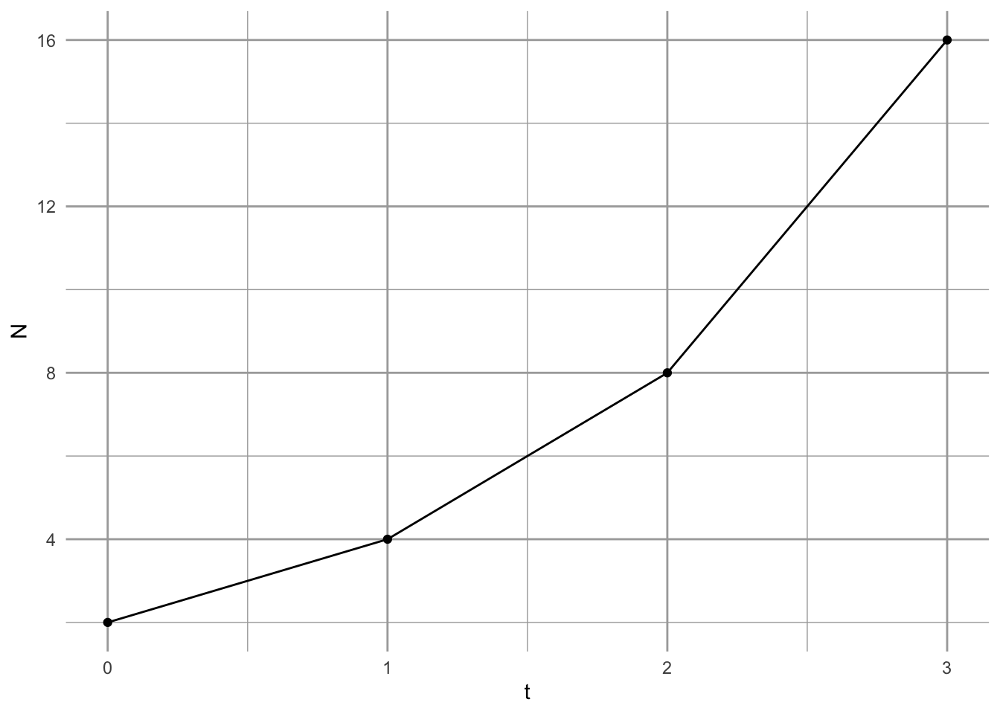
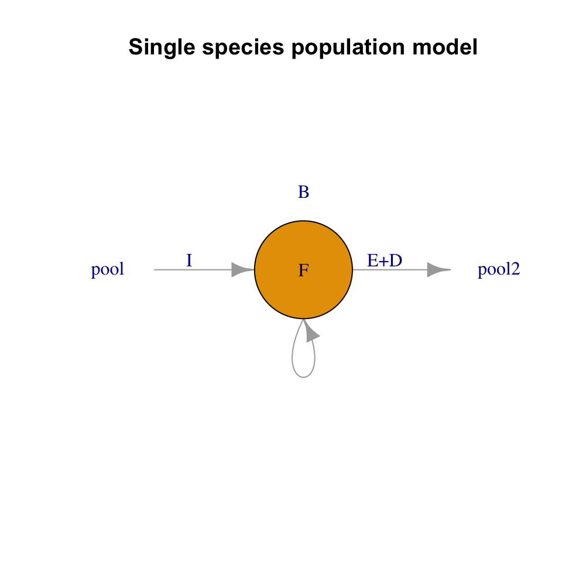
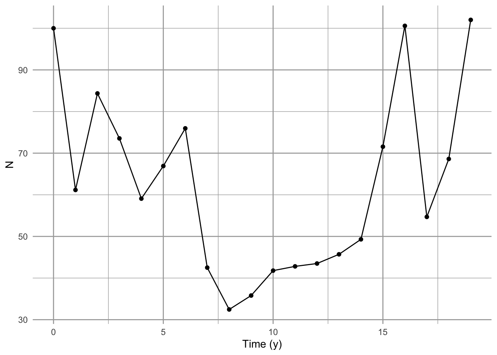

4 Simple density-independent growth

Between 1966 and 1971, Song Sparrow (Melospiza melodia) abundance in Darrtown, OH, USA, seemed to increase very quickly, perhaps unimpeded by any particular factor (Fig. Figure 4.1, Figure 4.2). In an effort to manage this population, we may want to predict its future population size. We may also want to describe its growth rate and population size in terms of mechanisms that could influence its growth rate. We may want to compare its growth and relevant mechanisms to those of other Song Sparrow populations or to other passerine populations. To do this, we start with the simplest of all population phenomena, geometric and exponential growth.
Geometric and exponential growth are examples of density-independent growth. This captures the fundamental process of reproduction (e.g., making seeds or babies) results in a geometric series.1 For instance, one cell divides to make two, those two cells each divide to make four, and so on, where reproduction for each cell results in two cells, regardless of how many other cells are in the population—that is what we mean by density-independent. This myopically observed event of reproduction, whether one cell into two, or one plant producing many seeds, is the genesis of a geometric series. Therefore, most models of populations include this fundamental process of geometric increase. Second, populations can grow in a density-independent fashion when resources are plentiful. It behooves us to start with this simple model because most, more complex population models include this process.
1 A constatnt ratio between successive numbers.
2 A zen koan, if there ever was one.
Hastings (2011) proposes that we can approach single species poulation growth from either a microscopic or macroscopic point of view. The microscopic approach begins with two propositions. The first is that if we know the location, timing, and traits of all individuals, we can predict perfectly population dynamics; the second is that we can never predict dynamics perfectly because births and deaths are fundamentally random and can be described only with probabilities.2 With this microscopic approach, we would seek a very detailed description of individuals and build a complex model to understand the consequences of the characteristics of all these interacting individuals, including the growth of the population.
In this chapter, I choose to start with Hastings’ macroscopic approach. These propositions appear simpler.
- A population grows exponentially in the absence of other forces.
- There are forces that can prevent a population from growing exponentially.
These are the consequences of the following assumptions.
- all individuals in a population are identical.
- there is no migration in or out of the population.
- the number of offspring per individual (or the per capita birth and death rates) are constant through time, and (ii) independent of the number of individuals in the population.
Deviations from these assumptions lead to all of the most interesting parts of single species population dynamics (Hastings 2011). The only deviation we play with in this chapter concerns assumption c; we model stochastic variation in population growth rate to investigate extinction risk. It is also worth mentioning that, although propositions 1 and 2 follow from assumptions a-d, they are not strictly necessary (Hastings 2011). For instance, individuals need not be identical, and we deal with a big exception in the next chapter where we introduce structured population growth. Also, migration is admissable, provided immigration = emigration and it does not alter growth rates. Nonetheless, other deviations from a. and b. can have very important consequences for single species population dynamics.
Here we define Density-independence in a real population as a lack of a statistical relation between the density of a population, and its per capita growth rate3. The power to detect a significant relation between any two continuous variables depends on those factors which govern statistical power, such as the number of observations, the range of the predictor variable, and the strength of the underlying relation. Therefore, our conclusion, that a particular population exhibits density-independent growth, may be trivial if our sample size is small, with few generations sampled, or if we sampled the population over a very narrow range of densities. Nonetheless, it behooves us to come back to this definition if, or when, we get caught up in the biology of a particular organism.
3 No observed relation between \(\frac{\Delta N}{N}\) vs. \(N\)
In this chapter, we’ll introduce density-independent population projection, growth, and per capita growth, for populations with synchronous reproduction (discrete models), and continuous reproduction (continuous models).
4.1 Discrete growth rates of fruit flies in my kitchen
Summertime, and the living is easy. Fruit flies in my kitchen, and their number’s quite high. Flies love my ripe fruit, and my red wine. They drown in the wine–I am not sure if that is good or bad.
For now, we’ll treat fruit flies as if they grow in discrete generations. This is very common for populatilons that live in seasonal habitats - their reproduction is timed to the season, and they breed altogether in one bout.4
4 discrete generations are common in nature.
I count the number of flies every week, and I find these numbers:
t <- c(0, 1, 2, 3)
N <- c(2, 4, 8, 16)
qplot(x=t, y=N, geom=c("line", "point") )
There are several ways we can describe fruit fly population growth. Here, we choose to begin by considering the proximate causes of change to population size per unit time: the numbers of births, immigration, death and emigration (Fig. Figure 4.3). Those are the only options, and we state it thus: \[\frac{\Delta N}{\Delta t} = \frac{B + I - D - E}{\Delta t}\] that is, the change in numbers of individuals per unit time5 is determined by the numbers of births, deaths, and migrants per unit time.
5 “Delta” N is the change in N.
Over the past month, I suspect the fruit flies are increasing primarily through reproduction in my kitchen. Clearly, at some point in the past, a fly or two (or three) must have immigrated into my kitchen, either as adults or as eggs or larvae in fruit I brought home (\(I>0\)). For now, I will assume fruit fly population dynamics in my kitchen are governed by only births and deaths (\(I=E=0\)). We refer to a population like this as closed, because it is closed to migration in or out.
If I counted the number of flies last week and again this week, I can calculate the change over one month. We have \[ \frac{N_{t+1} - N_t}{(t+1) - t}=\frac{\Delta N}{\Delta t}=\frac{B+D}{\Delta t}\] In this equation, \(t\) has a particular time unit, one week, so \(t+1\) is one additional week.

Because adults give rise to offspring, we can represent births and deaths as proportions of existing adults. That is, as per capita rates of birth and death, as \[B = bN;\quad D=dN\] This reflects the biological realities that adults produce offspring, and everyone has some chance of dying. The parameter \(b\) could be any positive real number, \(b \ge 0\). This model of births reflects the geometric property of reproduction: over a specified time interval \(\Delta t\), an average parent makes \(b\) babies. Parameter \(d\) is any real number between zero and one, \(0 \le d \le 1\). Both \(b\) and \(d\) have units of individuals per individual per unit time. They depend on that unit of time.
What if offspring die before the next census?
Fig. Figure 4.3 helps us think about these things. Simplifying, we’ll assume births occur first, and then death comes to offspring and adults.
Let’s define a few terms.
- \(N_0\), \(N_1\) - the number of flies at the start and after the first time interval.
- \(N^\prime\), \(N^{\prime\prime}\) - distinct values of \(N\), after births, but before \(N_1\).
- \(\Delta N\) - the change in \(N\) from one point in time to another.
- \(t\) is time, so \(\Delta t\) is the time interval over which \(N\) may change.
Let’s match these numbers to what is going on in my kitchen. For my first census count, at \(t=0\), I counted the adults and label that number \(N_0\). These adults lay eggs which hatch, and then larvae and pupae develop, and become adults, giving us a population of \[N^\prime = N_0 + bN\]
Some of the eggs fail to hatch, and some of the larvae die before maturing. Many of the adults die as well. If we assume the eggs, larvae, and adults all die at the same rate, then by the end of one generation we have \[N_1 = N^\prime - dN^\prime\]
Substituting, we get \[ N_1 = N_0 + bN_0 - d\left(N_0 + bN_0\right)\]
We see that by the next time point, \(t=1\), the number of fruit flies should be equal to the number we started with, \(N_0\), plus the number of new individuals, \(bN_0\), minus the number of original adults that die, \(dN_0\), and minus the number of new individuals that die, \(dbN_0\).
We can pull all of these parameters together, \[ N_1 = N_0 + bN_0 - dN_0 - dbN_0 \] \[ N_1 - N_0 = N_0 \left(b - d - db\right) = N_0r_d \tag{4.1}\]
where $r_d = b - d - db $.
The growth rate of the population is \(\Delta N / \Delta t\), or, at \(t=0\), is \[\frac{\Delta N}{\Delta t} = \frac{N_1 - N_0}{t_1-t_0} = \frac{(N_0 + r_dN_0) - N_0}{t_1-t_0} = r_d N_0 \] If we generalize, we drop the zero, to get \(r_dN\). The per capita population growth rate is \(r_dN/N =r_d\). If our time step were something other than 1, we would also divide by \(\Delta t\).
With the simple census data above, we can estimate \(r_d\) for the first time step. \[N_1 = N_0 + r_dN_0= 2 + r_d (2) \implies r_d=1\] If we know that \(r_d\) is constant over time, we can infer a general rule to project the population forward in time an arbitrary number of time steps. We will let \(\lambda = 1+r_d\). \[N_1 = N_0 + r_dN_0 = N_0(1 + r_d) = N_0\lambda\] \[N_2 = N_1\lambda= (N_0 \lambda)\lambda\] \[N_3 = N_2\lambda= (N_0 \lambda)\lambda\lambda\] or simply, \[N_t = N_0\lambda^t\]
To summarize our model of discrete population growth, we have the following statements:
Projection: \[N_t = N_0\lambda^t\]
Population growth rate: \[\frac{\Delta N}{\Delta t} = r_dN; \quad \mathrm{where~} \lambda=1+r_d\]
Per capita opulation growth rate: \[\frac{\Delta N}{N\Delta t} = r_d\]
At last, we see how this is a model of density-independent growth: per capita growth rate does not include \(N\).
4.2 Fruit flies with continuous overlapping generations
In the reality that is my kitchen, individual fruit flies are having sex and reproducing on their own schedules. As a population, they breed continuously, so the cohorts are not synchronous. For populations like that, we need to describe instantaneous growth rates, where \(\Delta t\) is no longer a fixed period of time, but is an instant, or infinity small.
We return to our example above (Fig. Figure 4.3), which we summarize in Equation 4.1. Please take a look at that equation. In what follows, we make time more explicit so that it appears in the equation. We begin by remembering that \(b\) and \(d\) have time units.
- Let \(\Delta t\) be a small fraction of \(1\), so that the time step goes from \(t\) to \(t + \Delta t\).
- As \(\Delta t\), shrinks, \(b\) and \(d\) need to shrink as well, to \(\Delta t b\) and \(\Delta t d\).
- \(dN/dt\) is how we symbolize the instantaneous rate of population growth, with lower case \(d\) symbolizing infinitesimally small change; it is a differential equation.
We now have to solve for the limit of \(\Delta N /\Delta t\) as \(\Delta t\) goes to zero. \[\frac{dN}{dt}=\lim_{\Delta t \rightarrow 0} \frac{N_{t+\Delta t} - N_t}{\Delta t} \] This means that the instantaneous rate of change of \(N\) is equal to the limit (as delta t approaches zero) of the difference in \(N\)’s of the time interval, delta t.
Substituting, we get, \[\frac{dN}{dt} = \lim_{\Delta t \rightarrow 0} \frac{\Delta t\,bN_t - \Delta t \,dN_t - \Delta t\, d (\Delta t\, b)N_t}{\Delta t} \]
If we divide through by \(\Delta t\) and then let \(\Delta t \rightarrow 0\), we get \[\frac{dN}{dt}=\lim_{\Delta t \rightarrow 0} bN_t - dN_t - \Delta t\, d bN_t = bN_t - dN_t=rN\]
To arrive at the projection equation for a continuously growing population, we integrate \(rN\) with respect to time. Integration is the cumulative summing of \(y\) across a range of \(x\). It even uses an exagerated “S” to indicate summation, \(\int\). Here we integrate population growth across time. We start by rearranging \[\frac{dN}{dt} = rN \Rightarrow \frac{dN}{N} = r dt\]
Now we integrate \(N\) and \(r\) with respect to their start and end points: \(N\) from \(N_0\) to \(N_t\), and, correspondingly, \(r\) from \(t=0\) to \(t=t\), \[\int_{N_0}^{N_t} \frac{1}{N}dN = \int_{0}^{t}rdt\] \[\ln(N_t) - \ln(N_0) = rt - r\,0\] \[\ln(N_t) = \ln(N_0) + rt\] We now exponentiate (\(e^x\)) both sides to arrive at our projection equation. \[N_t = e^{\ln(N_0) + rt} = N_0 e^{rt}\]
To summarize our model of continuous population growth, we have the following statements.
Projection: \[N_t = N_0 e^{rt}\]
Population growth rate: \[\frac{dN}{dt} = rN\]
Per capita population growth rate: \[\frac{dN}{Ndt} = r\] Once again, we see why we refer to exponential growth as density-independent: the per capita growth rate does not depend on \(N\).
4.3 Properties of geometric and exponential growth
Compare the projection equations for geometric and exponential growth. We find that \[\lambda = e^{r} \quad ; \quad \ln \lambda = r\] This gives us a few useful rules of thumb.
- No change: \(r = 0\quad;\quad\lambda =1\)
- Growing population: \(r > 0 \quad;\quad \lambda > 1\)
- Shrinking population: \(r < 0 \quad;\quad \lambda < 1\)
# Let r take on three values
r <- c( -1, 0, 1)
# Convert to lambda
exp(r)[1] 0.3678794 1.0000000 2.7182818Time scaling This is a useful property if we ever want to change time units in a discrete model. We must first \(\lambda\) to \(r\), change units in \(r\) and convert back to \(\lambda\). For instance, if we find that the annual finite rate of increase for a population of crickets is \(\lambda = 1.2\), we cannot convert that to a monthly rate of \(1.2/12 = 0.1\). Instead we convert to \(r\) and back to \(\lambda\).
lambda <- 1.2
# Convert lambda to r
r <- log(lambda); r[1] 0.1823216# Scale r from year to month
r2 <- r/12; r2[1] 0.01519346# Convert back to lambda (per month)
lambda2 <- exp(r2); lambda2[1] 1.015309This is very, very different than \(\lambda/12\).
Doubling time Sometimes we gain a more intuitive grasp of an idea when we convert to a different form of the same relationship. Exponential growth is one of those ideas that can be hard to grasp. A more intuitive way to compare or express exponential growth rate is through doubling time, the time required for the population to double in size. For instance, a per capita growth rate of \(r = 0.14\,\mathrm{inds}\cdot \mathrm{ind}^{-1} \mathrm{y}^{-1}\) means that the population will double in less than 5 years.
We determine this by letting \(N_t = 2N_0\). \[2N_0 = N_0 e^{rt}\] \[\ln 2 = rt\] \[t =\frac{\ln 2}{r}\]
# let r be a sequence from
r <- c(0.01, 0.05, 0.1, 0.5)
#doubling time will be
log(2)/r[1] 69.314718 13.862944 6.931472 1.386294# and a picture
par(mgp=c(1.2, .2, 0), mar=c(2, 2, 1, 1), tcl=-.2)
curve( log(2)/x, xlab="r", ylab="Doubling time")
4.3.1 Average growth rate
In any real data set, such as from a real population of fruit flies or Song Sparrows, \(N_{t+1}/N_t\) will vary from year to year. How do we calculate an average growth rate for a fluctuating population?
Let’s consider the case where a population increases and then decreases. For each year, we will calculate the annual rate of increase \(R = N_{t+1}/N_t\), and take the arithmetic average of those rates to see if it makes sense.
N <- c(20, 30, 15, 15)
R <- N[2:4]/N[1:3]; R[1] 1.5 0.5 1.0The arithmetic average of those rates is \((1.5 + 0.5 + 1.0)/3=1.0\). If \(R=1.0\), then, on average, the population should stay the same, but it decreased. Why is that?
Let us do the annual time steps explicitly to see what is going on. \[N_3 = (N_0 R_0) R_1 R_2\]
# Remember that we call the first time t=0 and N0, but
# when coding, these values are the first in a series, so
# N0 is N[1]
# Now we do the annual changes which should equal N3
N[1]*R[1]*R[2]*R[3][1] 15From this calculation, we see that when we start with \(N_0=20\) and do the annual steps, we wind up with a smaller population, even though the arithmetic average is \(R_{\mathrm{ave}} = 1\). How do we calculate an average of numbers that we multiply together?
We want a number \(\bar{R}\) such that \[\bar{R}^t = R_1R_2\ldots R_t\]
To find that, we simply solve for \(\bar{R}\) \[(\bar{R}^t)^{1/t} =\bar{R} = \left(R_1R_2\ldots R_t\right)^{1/t}\] We take the \(t\)-th root of the product of all the \(R\). This is called the geometric average. Another way of writing this would be to use the product symbol, as in \[\bar{R} = \left(\prod_{i=1}^t R_i\right)^{1/t}\]
R[1] 1.5 0.5 1.0#arithmetic average
mean(R)[1] 1# geometric average
t <- length(R); t[1] 3prod(R)^(1/t)[1] 0.9085603# shows the population should declineAnother way to do the same thing is to take the arithmethic mean of the log-growth rates, and back-transform,
exp( mean( log(R) ) )[1] 0.9085603Now we see the effect of calculating the average growth rate correctly. This leads to a useful rule of thumb: random variation in growth rate suppresses population growth. Here we illustrate that. We start with a growing population.
lambda <- 1.01 # positive growth rate
N0 <- 100 # starting N
t <- 20 # 20 years
Nt1 <- N0*lambda^t; Nt1[1] 122.019Here \(\lambda > 1\), so the population grows.
Now we do a simulation in which we let \(\lambda\) have a mean of 1.01 but allow it to vary randomly.
# create a vector to hold all N
N <- rep(0, t); N[1] <- N0
# create t-1 random lambdas with a mean of 1.01
# ranging from 0.41 to 1.61
set.seed(3) # makes the radnom sequence repeatable
random.lambda <- runif(n=(t-1), min=0.41, max=1.61)
# the geometric mean
prod(random.lambda)^(1/length(random.lambda))[1] 1.00105# actual simulated projection
for(i in 1:(t-1)) {
N[i+1] <- N[i] * random.lambda[i]
}
qplot(x=0:(t-1), N, geom=c("line", "point"), xlab="Time (y)")
Sometimes the arithmetic average is close to the correct average, but it is never the correct approach.
4.4 Modeling with Data: Simulated Dynamics
Science strives to make predictions about the behavior of systems. Ecologists and conservation biologists frequently strive to predict the fate of populations, that is, determine the probability that a population will persist. This is referred to as population viability analysis (PVA) and is a large field of endeavor that is vital to managing threatened populations. Here we put into practice ideas about population biology to make informed predictions about the fate of the Song Sparrow population in Darrtown, OH. We also illustrate simple computational methods for doing so.
The preceding sections (the bulk of the chapter) emphasized understanding the deterministic underpinnings of simple forms of density independent growth: geometric and exponential growth. This section explores the stochastic simulation of density independent growth. Our simulation makes most of the same assumptions we made at the beginning of the chapter. In addition, we assume that the observed annual growth rates (\(N_{t+1}/N_t\)) are representative of future growth rates, and that the growth rate in one year is entirely independent of any other year.
To make meaningful projections of future population size, we should quantify the uncertainty with our guess. Simulation is one way we can project populations and quantify the uncertainty. The way one often does that is to use the original data and sample it randomly to calculate model parameters. This way, the simulations are random, but based on our best available knowledge, i.e., the real data. The re-use of observed data occurs in many guises, and it is known often as bootstrapping or resampling.
In a highly influential paper on miminmum population sizes in conservation, Shaffer (1981) identifies four different types of noise or stochasticity that are important in driving variability in populations. The first of these is demographic stochasticity. This is the random-like or stochastic nature of individual births and deaths. Due to this element of random chance, individuals may live or die, produce offspring or not. As a result, population size will fluctuation randomly. This is very important in small populations, and becomes increasingly unimportant in larger and larger populations. This is the same process that underlies genetic drift in small populations.
Another source of variation Shaffer (1981) identifies is environmental stochasticity. This is temporal variation in birth or death rates that affects all individuals to a similar degree, due to variation in the population’s biotic or abiotic environment.
The last sources of variation are genetic stochasticity and natural catastrophes. Perhaps the latter of these is the most difficult to deal with, because catastrophes are, by definition, enormously consequential and unpredictable.
Given these sources of uncertainty, Shaffer (1981) defines minimum viable population size (MVP) thus,
“A minimum viable population for any given species in any given habitat is the smallest isolated population having a 99% chance of remaining extant for 1000 y despite foreseeable effects of demographic, environmental and genetic stochasticity, and natural catastrophes.”
In our simulations, we take one approach to simulating a population of Song Sparrows. The computational approaches includes a variety of tricks that you could use in a more serious approach to population projection and determining probabilities of extinction. In their supplemental documentation, Chaudhary and Oli (2019) provide an excellent list of criteria to evaluate your own or someone else’s approach to PVA.
4.4.1 Data-based approaches
We will use the observed changes in population counts \(R_t=N_{t+1}/N_t\) as our data. We draw an \(R_t\) at random from among the many observed values, and project the population one year forward. We then repeat this into the future, say, for ten years. Each simulation of a ten year period will result in a different ten year trajectory because we draw \(R_t\) at random from among the observed \(R_t\). However, if we do many such simulations, we will have a distribution of outcomes that we can describe with simple statistics (e.g., median, mean, quantiles).
A different approach would be to estimate the individual probabilities of births and deaths in the entire Darrtown population, and use those probabilities and birth rates to simulate the entire population into the future. In such an individual-based simulation, we would simulate the fates of individuals, keeping track of all individual births and deaths.
There are myriad other approaches, but these give you a taste of what might be possible. In this section we focus on the first of these alternatives, in which we use observed \(R_t\) to simulate the dynamics of Song Sparrow counts. We do so, in part, because we have those data, while we do not have any estimates of birth rates or death rates.
Here we investigate Song Sparrow (Melospize melodia) dynamics using data from the annual U.S. Breeding Bird Survey (http://www.mbr-pwrc.usgs.gov/ bbs/). Below we will
- create and examine visually the data (annual \(R\)’s),
- simulate one projection,
- scale up to multiple simulations,
- simplify simulations and perform them 1000s of times, and
- analyze the output.
4.4.2 Creating and visualizing the data
Let’s start by graphing the data6. Graphing the data is always a good idea — it is a principle of working with data. We first load the data from the primer R package, and look at the names of the data frame. We then choose to attach the data frame, because it makes the code easier to read.7
6 I’ve come to abhor my use of the expression “look at”; I use it when I don’t say what I mean. “Look at” can mean almost anything, but it rarely means only “looking at”…
7 Don’t use attach for anything important
library(primer) # load the primer package
data(sparrows) # load a built-in data set
names(sparrows) # extract the names of the columns in the data frame[1] "Year" "Count" "ObserverNumber"attach(sparrows) # put the columns in R's search pathNow we plot these counts through time (Fig. Figure 4.4).
ggplot(data=sparrows, aes(x=Year, y=Count)) + geom_line() + geom_point(pch=1)
We see that Song Sparrow counts at this site (the DARRTOWN transect, OH, USA) fluctuated a fair bit between 1966 and 2003. They never were completely absent and never exceeded \(\sim 120\) individuals.
Next we calculate annual \(R_t=N_{t+1}/N_t\), that is, the observed growth rate for each year \(t\).
# the use of [-1] in the index tells R to exclude the first element.
# length() is the length of a vector, so [-length(X)] means exclude the last
obs.R <- Count[-1]/Count[-length(Count)]Thus our data are the observed \(R_t\), not the counts per se. These \(R\) form the basis of everything else we do. Because they are so important, let’s plot these as well. Let’s also indicate \(R=1\) with a horizontal dotted line as a visual cue for zero population growth. Note that we exclude the last year because each \(R_t\) is associated with \(N_t\) rather than \(N_{t+1}\).
qplot(x=Year[-length(Count)], y=obs.R, geom="point") + geom_hline(yintercept=1, lty=3) +
labs(y=bquote(N[t+1]/N[t]), x="Year (t)")
One thing that emerges in our graphic data display (Fig. Figure 4.5) is we have an unusually high growth rate in the early 1990’s, with the rest of the data clustered around 0.5–1.5. We may want to remember that.
4.4.3 One simulation
Our simulation will,
- determine the number of years we wish to simulate,
- create an empty vector,
N, to hold our simulated \(N\), which isyears + 1long, - draw a random sample of \(R_t\), one for each year (
R), - select a starting abundance \(N_0\) and put it in
N[1]. - multiply our first random \(R\),
R[1], timesN[1]to generate the next,N[2]. - repeat step 5 for each year to simulate each
N[t+1]fromR[t]andN[t].
First, we decide how many years we want to simulate growth, and create an empty vector that will hold our data.
years <- 10
N <- numeric(years+1) # rep(0,years+1) would do the same thing.Our vector of \(N\) has to be one longer than the number of \(R\) we use. This is because each \(R\) is the change from one year to the next and there will always be one more next than there is \(R\).
Next we draw 10 \(R\) at random with replacement. This is just like having all 35 observed \(R\) written down on slips of paper and dropped into a paper bag. We then draw one slip of paper out of the bag, write the number down, and put the slip of paper back in the bag, and then repeat this 9 more times. This is resampling with replacement. In that case, we would be assuming that all of these \(R_t\) are important and will occur at some point, but we just don’t know when—they constitute the entire universe of possibilities. The R function sample will do this.
Terminology: A random process occurs only in our imagination, or perhaps at the quantum level. A stochastic process is one which we treat operationally as random while acknowledging that there are complex underlying deterministic drivers. A pseudorandom process is a completely deterministic and hidden process used by computers and their programmers to generate numbers that cannot be distinguished from random; we can repeat a pseudorandom process by stipulating a key hidden starting point.
We can use set.seed() to make your pseudorandom process the same as mine, i.e., repeatable.
set.seed(3)
# Draw a sample of our observed R with replacement, "years" times.
(rRs <- sample(x=obs.R, size=years, replace = TRUE)) [1] 1.4489796 0.8125000 1.0714286 1.2857143 0.7727273 0.4805195 1.2857143
[8] 1.0500000 0.7204301 1.4489796Now that we have these 10 \(R\), all we have to do is use them to generate the population sizes through time. For this, we need to use what programmers call a for-loop. In brief, a for-loop repeats a series of steps for a predetermined number of times.
Let’s start our simulated N with the sparrow count we had in the last year.
N[1] <- Count[length(Count)]Now we are ready to use the for-loop to project the population. For each year \(t\), we multiply \(N_t\) by the randomly selected \(R_t\) to get \(N_{t+1}\) and put it into the \(t +1\) element of N.
for( t in 1:years) {
# starting with year = 1, and for each subsequent year, do...
N[t+1] <- N[t] * rRs[t]
}Let’s graph the result.
qplot(0:years, N, geom=c("point","line"))
It appears to work (Fig. Figure 4.6).
Let’s review what we have done. We
- had a bird count each year for 36 years. From this we calculated 35 \(R\) (for all years except the very last).
- decided how many years we wanted to project the population (10,y).
- drew at random and with replacement the observed \(R\)—one \(R\) for each year we want to project forward.
- we created an empty vector and put in an initial value.
- performed each year’s calculation, and put it into the vector we made.
So what does Fig. Figure 4.6 represent? It represents one possible outcome of a trajectory, if we assume that \(R\) has an equal probability of being any of the observed \(R_t\). This particular trajectory is very unlikely, because it would require one particular sequence of randomly selected \(R\)s. However, we assume that it is no less likely than any other particular trajectory.
As only one realization of a set of randomly selected \(R\), Fig. Figure 4.6 tells us very little. What we need to do now is to replicate this process a very large number of times, and examine the distribution of outcomes, including moments of the distribution such as the mean, median, and the uncertainty of eventual outcomes.
4.4.4 Multiple simulations
Next we create a way to perform the above simulation several times. There are a couple tricks we use to do this. We still want to start small so we can figure out the steps as we go. Here is what we would do next.
- We start by creating a function that will do the steps we did above.
- We then perform replicate, independent simulations, using
replicate().
Here we write a function to combine several steps. Our function has three arguments: the observed \(R\), the number of years that we want to simulate, and the initial population size.
myForLoop <- function(obs.R, years, initial.N) {
## obs.R - observed annual growth rates,
## years - the number of years that we want to simulate,
## initial.N - the initial population size.
# select all R at random
rR <- sample(obs.R, size=years, replace=TRUE)
# create a vector to hold N
N <- numeric(years+1)
# give it an initial population size
N[1] <- initial.N
# Do the for-loop
# For each year...
for( t in 1:years ) {
# project the population one time step
N[t+1] <- N[t] * rR[t]
}
# return the vector of N
N
} After running the above code, try it out with different hypothetical \(R\).
myForLoop(obs.R=c(0.5, 1, 1.5), years=5, initial.N=43)[1] 43.000 21.500 10.750 5.375 5.375 5.375Our function seems to work.
Next we do ten such projection simulations, each for 50 time steps, using the sparrow data.
# specify the number of simulations and for how long
sims=10; years=50
# make the randomizations repeatable
set.seed(3)
outmat <- replicate(sims,
expr=myForLoop(obs.R=obs.R, years=years, initial.N=43)
)Now let’s peek at the results (Fig. Figure 4.7). It is fun to graph our output, but also helps us make sure we are not making a heinous mistake in our code. Note we use log scale to help us see the small populations.
matplot(0:years, outmat, type="l", log="y")
# combine columns years, and our output
junk <- data.frame(years = 1:(years+1), outmat)
names(junk) [1] "years" "X1" "X2" "X3" "X4" "X5" "X6" "X7" "X8"
[10] "X9" "X10" # make sure to load 'tidyr' if you did not already load it or tidyverse
# library(tidyr)
# Take the wide data frame with many columns and turn it into
# a long data frame with one column to ID each simulation, and one to hold values.
out.long <- pivot_longer(junk, cols=X1:X10, names_to="Run", values_to="N")
ggplot(data=out.long, aes(x=years, y=N, group=Run)) + geom_line() +
scale_y_log10()
# Or for colorful lines
# ggplot(data=out.long, aes(x=years, y=N, linetype=Run, colour=Run)) +
# geom_line(show.legend=FALSE) + scale_y_log10() 
What does it mean that the simulation has an approximately even distribution of final population sizes (Fig. Figure 4.8? If we plotted it on a linear scale, what would it look like?8
8 Plotting it on the log scale reveals that the relative change is independent of population size; this is true because the rate of change is geometric. If we plotted it on a linear scale, we would see that many trajectories result in small counts, and only a few get really big. That is, the median size is pretty small, but a few populations get huge.
Rerunning this simulation, with new \(R\) each time, will show different dynamics every time, and that is the point of simulations. Simulations are a way to make a few key assumptions, and then leave the rest to chance. In that sense it is a null model of population dynamics.
4.4.5 A distribution of possible futures
Now we are in a position to make an informed prediction, given our assumptions. We will predict the range of possible outcomes and the most likely outcomes, given our set of assumptions.
We will simulate the population for 50 years 10,000 times and describe the distribution of final population sizes. We use system.time to tell me how long it takes on my computer.
sims=1e4; years=50
set.seed(3)
## system.time keeps track of how long processes take.
system.time(
outmat <- replicate(sims,
expr=myForLoop(obs.R=obs.R, years=years, initial.N=43)
)
) user system elapsed
0.075 0.001 0.075 This tells me how long it took to complete 10,000 simulations. We also check the dimensions of the output, and they make sense.
dim(outmat)[1] 51 10000We see that we have an object that is the size we think it should be. We shall assume that everything worked way we think it should.
4.4.6 Analyzing results
We extract the last year of the simulations (last row), and summarize it with quartiles (0%, 25%, 50%, 75%, 100%, and also the mean).
N.2053 <- outmat[51,]
summary(N.2053) Min. 1st Qu. Median Mean 3rd Qu. Max.
0.000e+00 1.210e+01 6.074e+01 1.306e+03 2.977e+02 2.299e+06 hist(log10(N.2053))
The quantile() function allows us to find a form of empirical confidence interval, including, approximately, the central 90% of the observations.9
9 Note that there are many ways to estimate quantiles (R has nine ways), but they are approximately similar to percentiles.
quantile(N.2053, prob=c(0.05, .95) ) 5% 95%
1.331579 2862.940808 These quantiles provide an estimate of the most likely range of possible population sizes, given our assumptions.
4.4.7 Extinction probability: expectation and uncertainty
What is the chance that the sparrow would become extinct in this region, due to these inherent processes? As one answer to this question, we can calculate the fraction of times that the population fell below 1.0 (or \(\log N = 0\)). Based on the above summaries, it will be a fairly small number.
First, we convert persisting populations (\(N \ge 1\)) to 1, and extinct populations (\(N<1\)) to zero. We then sum the ones and divide by the total number of all simulated populations. This gives us the fraction surviving, and that is the fraction we expect; it is our expectation…the expected survival probability.
persisting <- as.numeric( N.2053 >= 1 )
(p <- sum(persisting)/length(persisting))[1] 0.9607Next we ask, what is the uncertainty associated with that? We will find an intuitive Bayesian answer to the question: What is the probability that the sparrow would become extinct in this region, due to these inherent processes?
We will gain an intuition into Bayesian probability elsewhere10. For now, we will simply rely on well-established relationship between the binomial probability distribution and the beta distribution.
10 Bayesian analysis allows us to estimate the probabiility that our hypothesis is true, as opposed to the probability of our data given our hypothesis (Pr(H|D) vs. Pr(D|H)).
A Bayesian approach forces us to use what we already know. For us, we will start with expert opinion of whether Song Sparrows are likely to maintain a self-replacing population (a ‘source’ population - Ch. 6) and avoid extinction over our time interval. In other words, we ask Dr. Dave Russell. He says “Probably, but you can’t be sure.” Let’s represent “probably” with the beta distribution. The beta distribution generates probability densities for a random variable between [0,1], perfect for representing probabilities which always lie between zero and one. The beta distribution has two parameters, often called shape 1 (\(\alpha\)) and shape 2 (\(\beta\)). The mean of the beta distribution is, \[\mu = \frac{\alpha}{\alpha + \beta}\]
base <- ggplot() + xlim(0, 1)
base +
geom_function(fun = dbeta, args = list(shape1 = 3, shape = 2)) +
labs(y="Probability density of surviving",
x="Probability of surviving (p)")
Fig. Figure 4.9 shows our prior beliefs. That is, before we look at our data, we think there is about a 3/5’s chance (60%) that Song Sparrows in Darrtown won’t become extinct over our time interval. How will we update our beliefs using our data?
First, our “data” are really just 36 years of counts and 35 estimates of annual growth (\(N_{t+1}/N_{t}\)). We can do as many simulations as we like, but they are still based on only 35 annual growth estimates. Therefore, if we combine our survival estimate with the amount of data, we multiply the survival probability by the sample size and think of it as evidence in favor of surviving. Weight of evidence not in favor is the difference.
# number of observations
nR <- length(obs.R); nR [1] 35p # probability of persisting[1] 0.9607# evidence in favor of survival
nR.surv <- nR * p; nR.surv[1] 33.6245# evidence in favor of extinction
nR.ext <- nR - nR.surv; nR.ext[1] 1.3755Next, we update our belief about Song Sparrow persistence, using the beta distribution. It turns out that we just add the evidence in favor of and not in favor of survival to the alpha and beta parameters (shape1, shape2) to get updated values that will generate our updated beliefs.
updated.alpha = 3 + nR.surv
updated.beta = 2 + nR.extNow we plot our updated beliefs, with what we call the posterior distribution.
base +
geom_function(fun = dbeta,
args = list(shape1 = 3,
shape2 = 2), linetype=2) +
geom_function(fun = dbeta,
args = list(shape1 = updated.alpha,
shape2 = updated.beta)) +
labs(y="Probability density of surviving",
x="Probability of surviving (p)")
A Bayesian approach to probability and learning
- start with what we believe prior to collecting data,
- collect some data, and then
- update our beliefs according to the data.
4.4.8 Inferring processes underlying growth rate
The above approach relies only on the observed data. That means that the growth rates, while representative, can never be different than what was observed. A different approach would be to assume that the growth rates can be different than observed, but drawn from the same underlying process that caused the observed rates.
The observed rates are simply a visible manifestation of unseen processes. We might summarize these by asserting that the observed growth rates were samples from a continuous distribution distribution, whose properties we can infer from the sample. For instance, it may be that these processes cause annual rates to follow a normal11, or perhaps log-normal distribution.12
11 Gaussian
12 The R package fitdistplus has great capabilities for fitting distributions to data, and estimating distribution parameters.
We can fit a normal distribution to the logarithms of our observed \(R\), and we see that it doesn’t do too bad a job (Fig. Figure 4.10).
hist(log(obs.R), breaks=10, ylab="Frequency")
lines(lR, rdR)
qqnorm(log(obs.R)); qqline(log(obs.R))

Now we will simulate populations just like before, but instead of random draws from the observed data, we do random draws from the inferred distribution.
Our new function.
myForLoop2 <- function(mu, sigma, years, initial.N) {
# select all R at random from a normal distribution
# where the mean and variance are the same as our data
lrR <- rnorm(years, m=mu, sd=sigma)
# exponentiate to backtransform to raw growth rate units
rR <- exp(lrR)
# create a vector to hold N
N <- numeric(years+1)
# give it an initial population size
N[1] <- initial.N
# Do the for-loop
for( t in 1:years ) {
# project the population one time step
N[t+1] <- N[t] * rR[t]
}
# return the vector of N
N
} Our new simulations.
# 10,000 simulations, each over 50 years
sims=1e4; years=50
# set the pseudorandom seed to 3 (for repeatability)
set.seed(3)
# do the replications
outmat2 <- replicate(sims,
expr=myForLoop2(mu=mu,
sigma=sigma,
years=years,
initial.N=43
)
)
## save the last year for each of the 10,000 simulations
N2.2053 <- outmat2[51,]
# compare the 90th quantiles for our two approaches to simulations
drawn.from.normal <- quantile(N2.2053, prob=c(0.05, .95) )
bootstrapped <- quantile(N.2053, prob=c(0.05, .95) )
list(drawn.from.normal=drawn.from.normal, bootstrapped=bootstrapped)$drawn.from.normal
5% 95%
1.205509 3089.819907
$bootstrapped
5% 95%
1.331579 2862.940808 The results are fairly similar to those based on only the observed \(R\). If they were markedly different, we might ask whether our choice of distribution was appropriate.
Our conclusions are based on a model of discrete density-independent population growth.
- what assumptions are we making and are they valid?
- Are our unrealistic assumptions perhaps nonetheless a good approximation of reality?
- what would you like to add next to make the model a better approximation?
4.5 1/\(f\) environmental noise
Perhaps we can explain some of the variation in annual growth rates of sparrows to weather patterns in the sampling area (Darrtown, Ohio). In doing so, we might be assuming the environmental stochasticity is worth modeling which might allow us to separate demographic effects from environmental effects. That would give us a better model we might use for explanation and prediction.
When we model or simulate a time series, we often find it essential to account for patterns that arise on different time scales and have different magnitudes. For instance, air temperature (and its consequences) varies diurnally, from day to day, week to week, and across seasons. We often refer to this as “one over f-noise” (\(1/f\)-noise), that is, random variation of multiple overlapping asynchronous patterns of variation. This can be characterized with spectral analysis (Shumway and Stoffer 2019; Halley 1996). Spectral analysis allows us to detect cyclic repeating patterns in strongly cyclic data, such as El Niño Southern Oscillations, small mammal population cycles, tree masting dynamics, disease outbreaks. In fact, nearly all environmental variability typically shows some degree of structure that is nonrandom.
In addition to detecting the particular frequencies of some cycles, we can also describe multivariate emergent spectral patterns with reference to a color spectrum. When variation at all time scales is equally important, we refer to this as white noise, analogous to white light, which includes all visible frequencies. When lower frequencies are more important, we refer to this as red noise. This results from low-frequency long-wavelength patterns having greater amplitude than high-frequency, short-wavelength patterns. We refer to this as reddened noise.
Environmental variables typically have a reddened color that we often call pink noise (Halley 1996).This type of environmental variation as environmental color, whether white, pink, brown, or even, in the other direction, blue.
set.seed(1)
time.series.r <- one_over_f(gamma=1, N=50)
plot(1:50, time.series.r, type='l', main="Pink noise")
time.series.w <- one_over_f(gamma=0, N=50)
plot(1:50, time.series.w, type='l', main="White noise")

Experimental studies of environmental variation require us to isolate different features of the variability while holding other features constant. For instance, we may want to hold the mean temperature constant but add different amounts of variation. We may want to hold the mean and the variance constant, but vary the spectral environment color. Spectral mimicry (Cohen et al. 1999) is a technique to helps us do that. It takes a string of numbers and arranges them into a sequence whose spectral signature mimics a designated spectral pattern. This imbues the original numbers with a different spectral pattern. Thus, the two sequences retain exactly the same data and therefore the same means and variances, but differ only in their sequences and spectral properties.
Below, we use spectral mimicry to simulate Song Sparrow population dynamics. We first investigate spectral mimicry by creating
- a string of uniform random numbers between [0,1],
- a template that has pink (slightly reddened) sequence,
- a rearrangement of the original string to match the spectral properties of the template.
We then plot the three vectors, showing the original data, the reddened template, and then the data rearranged to approximate the template.
N = 50 # number of data points in one string
set.seed(1) # set the pseudorandomization seed
## create uniform random numbers
N.random <- runif(N)
## Pink noise template
one.over.f.template <- one_over_f(gamma=1, N=N)
## Rearrangement (mimicry)
N.f <- spec_mimic(N.random, one.over.f.template)
## combine and plot
series <- cbind(N.random, one.over.f.template, N.f)
matplot(1:50, series, type='l',
col=c(1,2,2), lty=c(1,2,1), lwd=c(1,2,2))
legend("bottomright",
legend=colnames(series), bty='n',
col=c(1,2,2), lty=c(1,2,1), lwd=c(1,2,2))
In Fig. Figure 4.11, the solid lines refer to the uniform data (black) and the reddened (red).
4.5.1 Reddened Song Sparrow growth
Imagine that the Ohio (USA) environment of our Song Sparrows reveals environmnetal stochasticity, that is, random-like fluctuations that we do not understand. Next imagine that this environmental stochasticity affects Song Sparrow growth rate. If we want to simulate future sparrow population dynamics, we may want to mimic the type and magnitude of this underlying variation. We might do that by using our original annual growth data, but arranged in a reddened series.
Let us first examine whether the sparrow growth rates show evidence of reddened population dynamics. We can use the plot_f() in primer to evaluate that. It plots the time series, and then the power spectra. It fits a line to the log(power) vs. log(frequency) and calculates a frequentist confidence interval.
plot_f(Count)
2.5 % 97.5 %
-2.4033940 -0.6872647 Not surprisingly, we see the possibility of reddened population dynamics. You could also investigate the observed annual growth rates the same way.
To resample the sparrow growth rates and also create a reddened sequences of them, we could do two things, depending on our goals. We could create a large number of different reddened templates and mimic them using only the observed data. Alternatively, we can draw annual growth rates at random, and match each random draw to the same reddened sequence.
Below, we simply rearrange the observed annual growths into a single reddened sequence. For the reddened template, we will assume moderate reddening, or pink noise, for which \(\gamma = 1\).
R.n = length(obs.R) # number of observations
## A random pink noise template
set.seed(2)
one.over.f.template <- one_over_f(gamma=1, N=R.n)
## Rearrange the observed R
R.f <- spec_mimic(obs.R, one.over.f.template)
## combine and plot
series <- cbind(obs.R, one.over.f.template, R.f)
matplot(1:R.n, series, type='l',
col=c(1,2,2), lty=c(1,2,1), lwd=c(1,2,2))
legend("bottomright",
legend=colnames(series), bty='n',
col=c(1,2,2), lty=c(1,2,1), lwd=c(1,2,2))
Now we can project a simulated sparrow population
N.f <- numeric( length(R.f) + 1 )
# give it an initial population size
N.f[1] <- 43
# Do the for-loop
# For each year...
for( t in 1:length(R.f) ) {
# project the population one time step
N.f[t+1] <- N.f[t] * R.f[t]
}
## Graph N, and R
layout(matrix(1:2, nrow=2))
par(mar=c(1,4,1,1))
plot(1:length(N.f), N.f, type='l'); text(27,90, "Pop. size")
plot(1:length(R.f), R.f, type='l'); text(17, 2, "Randomized Pink Annual R")
abline(h=1, lty=2)
Can you make predictions about how environmental noise might alter the risk of extinction?
4.6 In fine
In this chapter, we have explored the meaning of density-independent population growth. It is a statistically demonstrable phenomenon, wherein the per capita growth rate exhibits no relation with population density. It is a useful starting point for conceptualizing population growth. We derived discrete geometric and continuous exponential growth and have seen how they are related. We calculated doubling times. We have discussed the assumptions that different people might make regarding these growth models. We introduced a characteristic of environmental variability, \(1/f\)-noise. We have used simulation to explore prediction and inference in a density-independent context. Our simulations included those with and without \(1/f\)-noise.